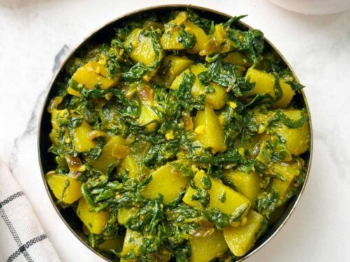

Aloo Palak

Aloo Palak (Potato and Spinach Curry) is a simple, delicious Indian curry recipe made with potatoes (aloo), fresh spinach leaves (palak), and a few spices. This flavorful side dish is best enjoyed with flatbread like roti, naan, paratha, or steamed rice and dal.
Ingredients:
- Potato: 3 medium Yukon gold potatoes cut into ¾-inch pieces. You can use any variety of potatoes.
- Spinach Leaves: Fresh baby spinach.
- Onion: One medium red oninon.
- Garlic: use freshly minced garlic for the best flavor.
- Green Chili: I used 2 Thai chilies for the heat.
- Oil: Olive oil
- Spices: Cumin seeds, turmeric powder, red chili powder, garam masala, cumin powder, coriander powder are all you need to season this aloo palak sabzi recipe. You can increase or decrease the spices according to your preference.
- Lime Juice: use freshly squeezed lime/lemon juice.
How to Make Aloo Palak
- Heat oil in a heavy-bottom pan over medium heat. Add cumin seeds and let them splutter.
- Next, add minced garlic, green chili, and saute for a few seconds.
- Add onions and saute until the onions turn light brown.
- Then add cubed potatoes, mix well, and saute for 2-3 minutes.
- Add spices like turmeric, red chili powder, coriander powder, cumin powder, and salt, 2-3 tablespoons of water. Cover, and cook the potatoes for 5 to 6 minutes until they are fork-tender. You may stir once or twice in between.
- Then add chopped spinach leaves and cook for another 5 to 6 minutes uncovered (keep stirring in between), until the leaves wilt, the moisture dries out, and the potatoes are perfectly cooked.
- Lastly, add lime juice (or amchur powder) and garam masala and mix well. Turn off the heat.
- Serve dry Aloo palak with roti or bread of your choice.